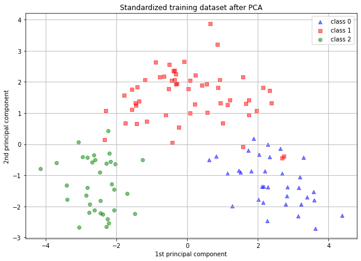

[67]:
import matplotlib.pyplot as plt
from observable_jupyter import embed
from sklearn.datasets import load_wine
from sklearn.pipeline import make_pipeline
from sklearn.preprocessing import StandardScaler
from sklearn.decomposition import PCA
from sklearn.naive_bayes import GaussianNB
from sklearn.metrics import accuracy_score
from sklearn.model_selection import train_test_split
import pandas as pd
import json
[37]:
wine = load_wine()
wine_df = pd.DataFrame(data = wine.data, columns = wine.feature_names)
wine_df.head()
[37]:
| alcohol | malic_acid | ash | alcalinity_of_ash | magnesium | total_phenols | flavanoids | nonflavanoid_phenols | proanthocyanins | color_intensity | hue | od280/od315_of_diluted_wines | proline | |
|---|---|---|---|---|---|---|---|---|---|---|---|---|---|
| 0 | 14.23 | 1.71 | 2.43 | 15.6 | 127.0 | 2.80 | 3.06 | 0.28 | 2.29 | 5.64 | 1.04 | 3.92 | 1065.0 |
| 1 | 13.20 | 1.78 | 2.14 | 11.2 | 100.0 | 2.65 | 2.76 | 0.26 | 1.28 | 4.38 | 1.05 | 3.40 | 1050.0 |
| 2 | 13.16 | 2.36 | 2.67 | 18.6 | 101.0 | 2.80 | 3.24 | 0.30 | 2.81 | 5.68 | 1.03 | 3.17 | 1185.0 |
| 3 | 14.37 | 1.95 | 2.50 | 16.8 | 113.0 | 3.85 | 3.49 | 0.24 | 2.18 | 7.80 | 0.86 | 3.45 | 1480.0 |
| 4 | 13.24 | 2.59 | 2.87 | 21.0 | 118.0 | 2.80 | 2.69 | 0.39 | 1.82 | 4.32 | 1.04 | 2.93 | 735.0 |
[69]:
FIG_SIZE = (10, 7)
RANDOM_STATE = 9
features, target = load_wine(return_X_y=True)
[60]:
X_train, X_test, y_train, y_test = train_test_split(
features, target, test_size=0.30, random_state=RANDOM_STATE
)
[61]:
std_clf = make_pipeline(StandardScaler(), PCA(n_components=2), GaussianNB())
std_clf.fit(X_train, y_train)
pred_test_std = std_clf.predict(X_test)
[62]:
print("\nPrediction accuracy for the standardized test dataset with PCA")
print(f"{accuracy_score(y_test, pred_test_std):.2%}\n")
Prediction accuracy for the standardized test dataset with PCA
96.30%
[63]:
pca_std = std_clf.named_steps["pca"]
[64]:
print(f"\nPC 1 with scaling:\n{pca_std.components_[0]}")
PC 1 with scaling:
[ 0.12436211 -0.22246885 -0.00861747 -0.21719999 0.13934692 0.41380799
0.43196412 -0.2813358 0.31695811 -0.10169394 0.29240193 0.38952333
0.28872603]
[65]:
scaler = std_clf.named_steps["standardscaler"]
scaled_X_train = scaler.transform(X_train)
X_train_std_transformed = pca_std.transform(scaled_X_train)
[76]:
# visualize standardized vs. untouched dataset with PCA performed
fig, (ax1) = plt.subplots(ncols=1, figsize=FIG_SIZE)
target_classes = range(0, 3)
colors = ("blue", "red", "green")
markers = ("^", "s", "o")
for target_class, color, marker in zip(target_classes, colors, markers):
ax1.scatter(
x=X_train_std_transformed[y_train == target_class, 0],
y=X_train_std_transformed[y_train == target_class, 1],
color=color,
label=f"class {target_class}",
alpha=0.5,
marker=marker,
)
ax1.set_title("Standardized training dataset after PCA")
ax1.set_xlabel("1st principal component")
ax1.set_ylabel("2nd principal component")
ax1.legend(loc="upper right")
ax1.grid()

[ ]: